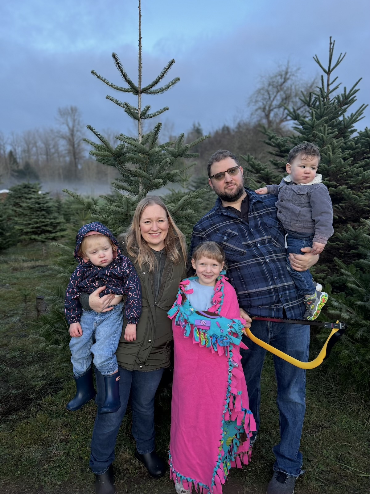

Hello, My Name is Jessica Bruner. I am a Doctor of Osteopathic Medicine pivoting into Application Development and Health Informatics. My goal is driven to build accessible, user-centric software solutions that bridge the gap between clinical needs and IT execution.My professional journey is defined by an ability to master complex, rigorous systems, culminating in my medical degree from the UNT Health Science Center in 2022 and a B.S. in Molecular, Cell, and Developmental Biology from UC Santa Cruz, where I graduated Summa Cum Laude. Most recently, I served as a Family Medicine Resident in Yakima, Washington. My technical foundation predates my medical training. Before I decided to go into medicine, I spent several years working as a Graphic Designer, developing complex layouts utilizing Adobe Creative Suite. This unique fusion of visual design expertise and clinical experience naturally guided me toward health tech, where I am now pursuing an Application Development AAS-T at Seattle Colleges. I plan to apply for my Master's in Health Informatics next Fall.
Beyond my professional pursuits, I serve as the primary logistical strategist for my family, organizing the complex dynamics of a busy household with three children and our Golden Retriever "Riley". I am relocating to the Seattle area in the June of 2026. My personal hobbies include graphic design, photography, hiking and emerging interest in 3d printing. I tackle every challenge with a plainspoken, highly analytical, and entirely independent perspective.